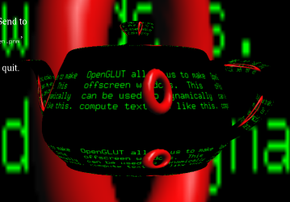

OpenGLUT Project
0.6.3 development
OpenGLUT - An open source evolution of the GLUT API.

Offscreen rendering to a texture using OpenGLUT
The current focus of the project is fixing bugs and improving cross-platform support.
Our longer term goal is to define and implement OpenGLUT API Version 1.0 - intended to supercede the GLUT 3.x API.
- GLUT is a popular, portable and well documented API
- Learning GLUT is easy for beginners
- Mark Kilgard's GLUT implementation has known bugs/features/limitations
- Mark Kilgard's GLUT implementation is not actively maintained and is not available as open source
- There are areas of the GLUT that can be improved
- Interactive 3D graphics is rapidly evolving
- GLUT by Mark Kilgard, originally implemented on SGI systems, later ported to Win32 by Nate Robins
- freeglut by Pawel W. Olszta and others, a compatible open source implementation of GLUT
- OpenGLUT a mostly-compatible open source implementation of GLUT with new features and refinements
Some changes since forking from freeglut include:
- Improved full-screen support
- Improved joystick support
- Improved Cygwin and Mingw32 support
- Improved bitmap font rendering
- Improved ANSI-C compliance
- Documentation refinements
- Experimental offscreen rendering
Current proposals for OpenGLUT 1.0
Other ideas being considered
- Fullscreen and game-mode API: rationalisation
- Extended geometric API: beyond the box, sphere and teapot
- Image loading API (for textures).
- Text Rendering API: scalable, textured fonts in model space.
- OpenGL extensions API

Experimental menu window using OpenGLUT
Detailed API and example documentation is available online or as a download in HTML and man-page formats.
The latest development version of OpenGLUT is available via SourceForge.
The current development version of OpenGLUT is source-compatible with the GLUT API, but not binary-compatible.
Compatibility of OpenGLUT 1.0 with GLUT 3.x has not yet been decided.
The motivation for the OpenGLUT API is to make OpenGL based development easy, productive and reliable. We would welcome feedback in relation to API proposals, results with using OpenGLUT in applications, and feature requests or proposals. There may well be functionality in your own application that could serve a broader long-term purpose.
Please visit the OpenGLUT SourceForge Interface for bug reporting, feature requests/suggestions, mailing lists or discussion forums.
The current source code repository is available via CVS at SourceForge.
A CVS web interface is also available, including diff, annotation and log viewing functions.
A nightly CVS tarball is also available.
Generated on Tue Oct 5 18:44:20 2004 for OpenGLUT by
doxygen 1.3.8
The OpenGLUT project is hosted by sourceforge.net.